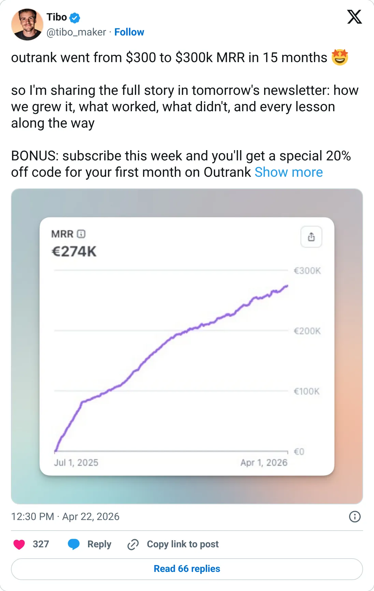
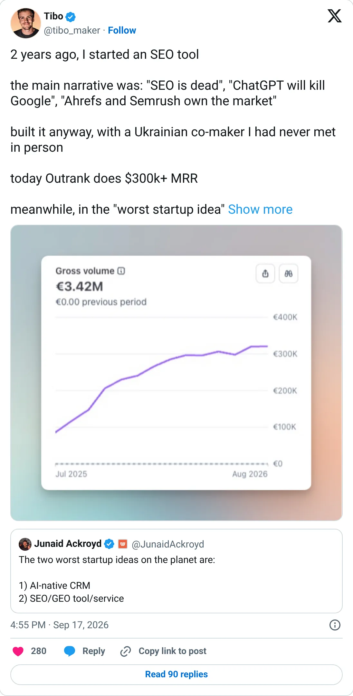

Don't build this
Outrank
Autopilot SEO at a round number the founder's other products don't support.
$300K+ MRR
Should you build this
Outrank is autopilot SEO: keywords in, articles out, '$300 to $300k MRR' as the story, then '$300k+'. The same founder’s verified product SuperX is at $22k MRR, and his all-products posts sit around $30–35k, not $1M. Meanwhile SEObot, ChatSEO, and Sorank — the same kind of product, on Stripe — are each around $30k. That is the real size of the idea. The $300k is the costume. Don't build an article mill because a tweet said the mill prints money.
Cited from the captured posts, shown below: the earliest captured post (Apr 22, 2026): This post is cited for more than one point in the trail: ~$300 MRR at the start (15 months before Apr 2026); $300 → $300K MRR in 15 months; the latest milestone (Sep 17, 2026) is the source for “Outrank does $300K+ MRR”.
Posts this is based on

This post is cited for more than one point in the trail: ~$300 MRR at the start (15 months before Apr 2026); $300 → $300K MRR in 15 months
Open on X

Outrank does $300K+ MRR
Open on X
What the product is
Automated SEO content engine: finds keywords, writes and publishes optimized articles and builds backlinks on autopilot.